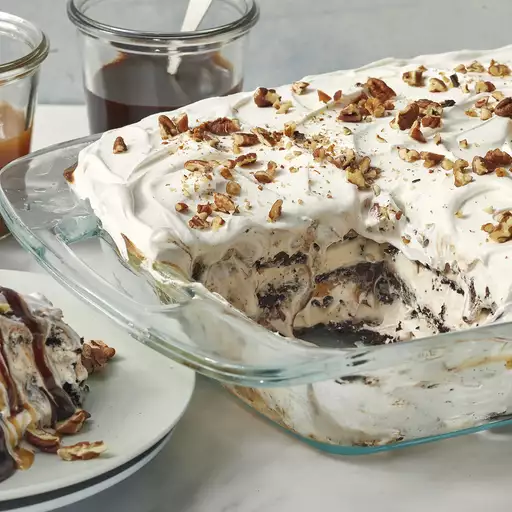

Ice Cream Sandwich Cake

Description
An ice cream sandwich cake is a delightful dessert creation that combines the delightful flavors of ice cream and the classic appeal of sandwiches. This delectable treat is made by layering ice cream sandwiches with various sweet and creamy components to craft a frozen cake-like structure.
The layers typically consist of alternating ice cream sandwiches and a medley of complementary ingredients, which might include whipped cream, chocolate sauce, caramel drizzle, crushed cookies, and even bits of candy or fruit. It's perfect for celebrations, summer gatherings, or any occasions.
Ingredients
- 24 vanilla ice cream sandwiches, unwrapped
- 2 (8 ounce) containers whipped topping (such as Cool Whip®), thawed
- 1 (12 ounce) jar hot fudge ice cream topping, warmed
- 1 (12 ounce) jar caramel ice cream topping
- ¼ cup chopped pecans, or to taste
Steps
- Arrange a layer of ice cream sandwiches in the bottom of a 9x13-inch dish
- Top with a layer of whipped topping, hot fudge topping, and caramel topping.
- Repeat layering with remaining ice cream sandwiches, whipped topping, hot fudge topping, and caramel topping, ending with a top layer of whipped topping.
- Sprinkle with pecans.
- Cover the dish with aluminum foil and freeze until set, about 30 minutes.